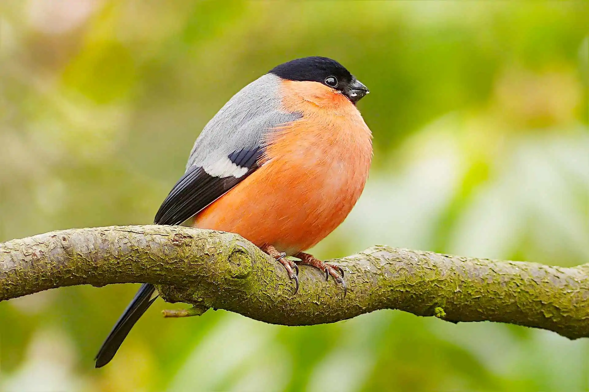
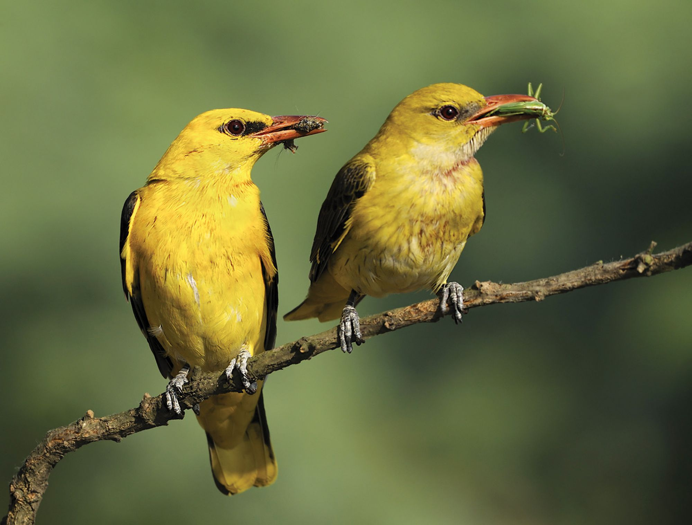
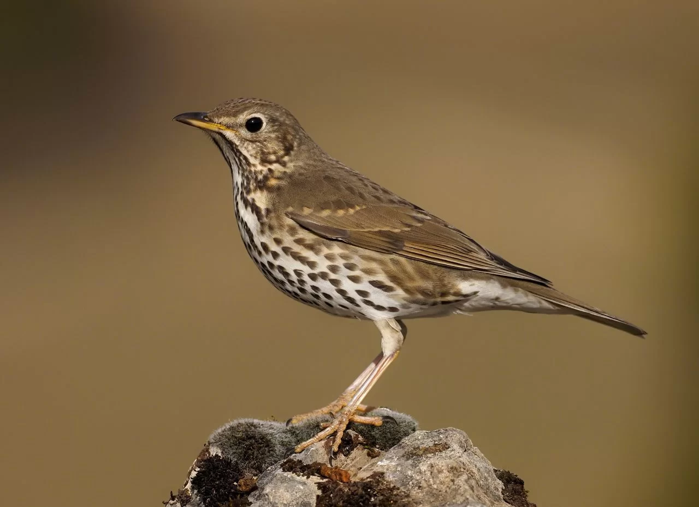

Gil to gatunek małego ptaka z rodziny łuszczakowatych (Fringillidae), zamieszkujący Eurazję. Nie jest zagrożony. Zamieszkuje północną Europę i Azję aż po Kamczatkę i Japonię. Poza tym spotkać go można w północnej Turcji i Iranie. W Polsce nieliczny ptak lęgowy we wszystkich regionach, lokalnie może być średnio liczny.

GilOdgłosy wydawane przez gila:
Szpak
Szpak gatunek średniej wielkości ptaka z rodziny szpakowatych (Sturnidae). Częściowo wędrowny. Pierwotnie zamieszkiwał wyłącznie Eurazję. Nie jest zagrożony wyginięciem. Dzięki introdukcji gatunek kosmopolityczny, w 13 podgatunkach występuje na każdym kontynencie poza Antarktydą; poza rodzimym zasięgiem także w Ameryce Północnej (od Jukatanu po Alaskę), Argentynie, Południowej Afryce, wschodniej Australii, Nowej Zelandii i okolicznych wyspach. Jest to gatunek inwazyjny.
SzpakOdgłosy wydawane przez szpaka:
Wilga
Wilga (Oriolus oriolus) – gatunek średniej wielkości ptaka wędrownego z rodziny wilgowatych (Oriolidae), jedyny z tej rodziny rozmnażający się w północnej strefie umiarkowanej. Nie jest zagrożony wyginięciem. Zamieszkuje umiarkowaną część Eurazji oraz północno-zachodnią Afrykę. W Polsce średnio liczny ptak lęgowy niżu. Unika wyższych terenów górskich. To jeden z najbarwniejszych ptaków spotykanych w kraju. W Polsce przebywa krótko – od maja do sierpnia–września.

WilgaOdgłosy wydawane przez wilgę:
Śpiewak
Śpiewak (Oriolus oriolus) – gatunek średniej wielkości ptaka wędrownego z rodziny wilgowatych (Oriolidae), jedyny z tej rodziny rozmnażający się w północnej strefie umiarkowanej. Nie jest zagrożony wyginięciem. Zamieszkuje umiarkowaną część Eurazji oraz północno-zachodnią Afrykę. W Polsce średnio liczny ptak lęgowy niżu. Unika wyższych terenów górskich. To jeden z najbarwniejszych ptaków spotykanych w kraju. W Polsce przebywa krótko – od maja do sierpnia–września.

ŚpiewakOdgłosy wydawane przez śpiewaka:
Jaskółka
Jaskółka to gatunek niewielkiego ptaka wędrownego z rodziny jaskółkowatych (Hirundinidae). Zamieszkuje rozległe obszary na kuli ziemskiej – niemal całą Eurazję (prócz północnych krańców), część północnej Afryki i prawie całą Amerykę Północną. W Polsce bardzo liczny ptak lęgowy, najliczniejszy z trzech występujących tu gatunków jaskółek.
JaskółkaOdgłosy wydawane przez jaskółkę: